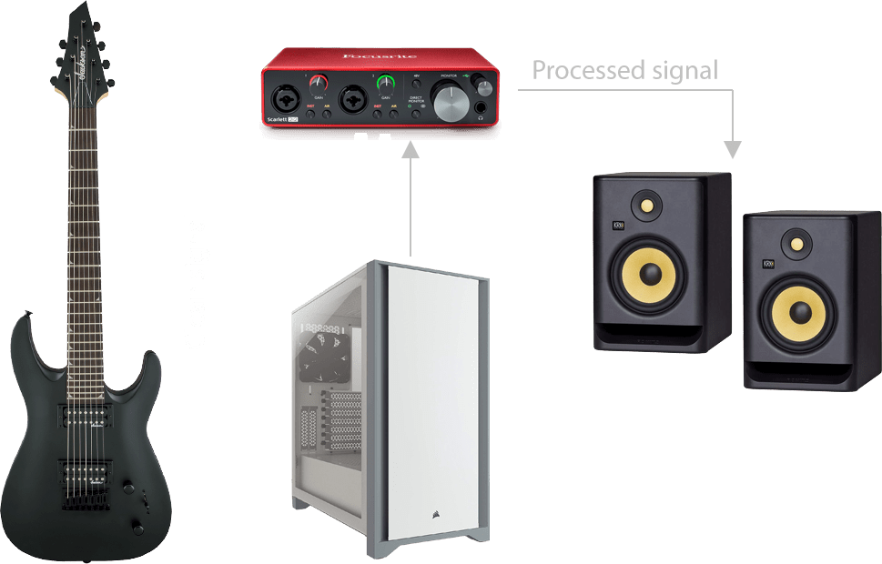

About me
In this page, you can read more about me as a musician and about the stuff I use to make my videos.
What are my musical roots / influences ?
My dad is a metalhead himself since he was 16. It's from him that I acquired a liking for both guitar and metal music.
Oddly enough, I enjoy playing bass more than guitar and listening to House music rather than metal.
My metal influences are short as I grew listening only to three metal bands: Killswitch Engage, Bullet For My Valentine and Lamb of God. Recently I opened my repertory a little bit listening to Ola Englund and Kamelot.
Besides metal, other bands I used to listen to while growing up were: Alien Ant Farm, Paramore, Lost Prophets, Linking Park and 30 Seconds to Mars.
I watch SpectreMediaGroup YouTube channel a lot, I'm a big fan of Glenn Fricker's work.
What software do I use?
For editing audio I use Cockos REAPER, REAPER is a powerful DAW and yet simple to use, and the best part is that it's only $69 bucks.
For editing video I use Premiere Pro, It's more than enough of what I do. Sadly, is not as cheap as REAPER.
Which studio gear do I use?
My recording setup is a simple one, even for a bedroom recording studio, all I use is a Focusrite Scarlett 2i2 and my PC.
I connect my instrument straight into the interface, which sends the signal to Reaper and then gets sent out processed to my monitors.
The signal path is as follow:

How do I get my guitar tone?
I plug my guitar into the interface and record the clean guitar signal straight into REAPER. Then I apply some plugins to it.
For guitar, my favourite plugins are Ignite Amps Emissary and EZMix 2 Guitar Gods Pack 3.
For bass, I go for either TSE BOD and ReaComp or EZMix 2.
Instruments

- Jackson Dinky JS22-7 DKA TH Custom
- Poplar body
- Maple neck with Amaranth fretboard
- 24 Jumbo frets
- Ernie Ball 7-String Super Slinky .9 - .52
- EMG 57-7 (B) & EMG 66-7 (N) pick-ups
- Drop A 7-String Tunning (A-E-A-D-G-B-E)
- Played with Dunlop Jazz III Ultex® 1.14mm picks

- Schecter Damien Elite 6 CBR
- Spruce top with Sapele back & sides
- Okoume neck with Purpleheart fretboard
- 20 standard frets
- Ernie Ball Burly Slink 6 Strings .11 - .52
- EMG 81 (B) & EMG 85 (N) pick-ups
- Drop C Tunning (C-G-C-F-A-D)
- Played with Dunlop Jazz III Ultex® 1.14mm picks

- Ibanez Talman TCY10E TBS
- Mahogany body with Arched top
- Maple 3 pieces neck with Rosewood fretboard
- 24 X-Jumbo frets
- Ernie Ball Earthwood Extra Light 80/20 Bronze .10 - .50
- Ibanez Undersaddle pick-up with Ibanez AEQ-2T preamp
- E Standard Tunning (E-A-D-G-B-E)
- Played with Dunlop Gels® Green Medium/Light picks

- Ibanez GSR206B WNF
- Nyatoh body
- Maple neck with Jatoba fretboard
- 24 Medium frets
- Ernie Ball 6-String Long Scale Slinky Bass .32 .130
- Dynamix H pick-ups (Bridge & Neck)
- Drop A 6-String Bass Tunning (A-E-A-D-G-C)
- Played with Dunlop Tri-Stubby 3mm picks